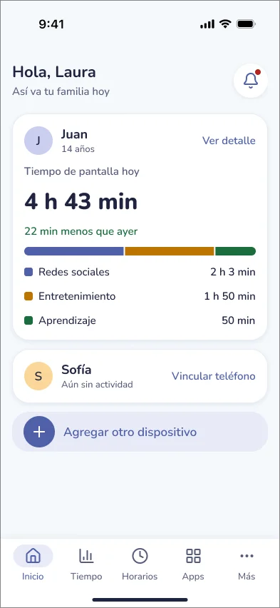
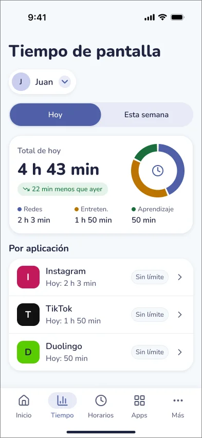
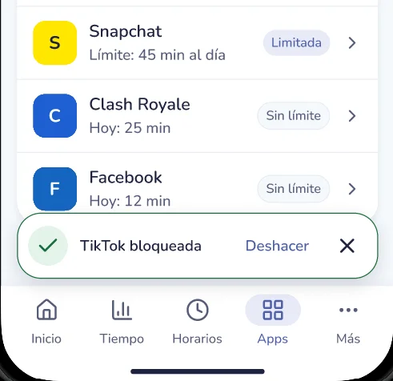
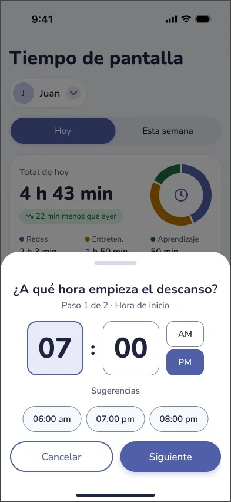
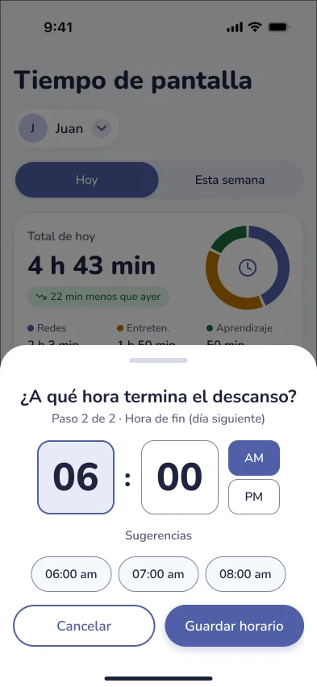
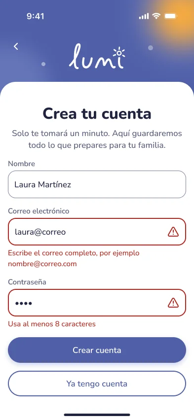
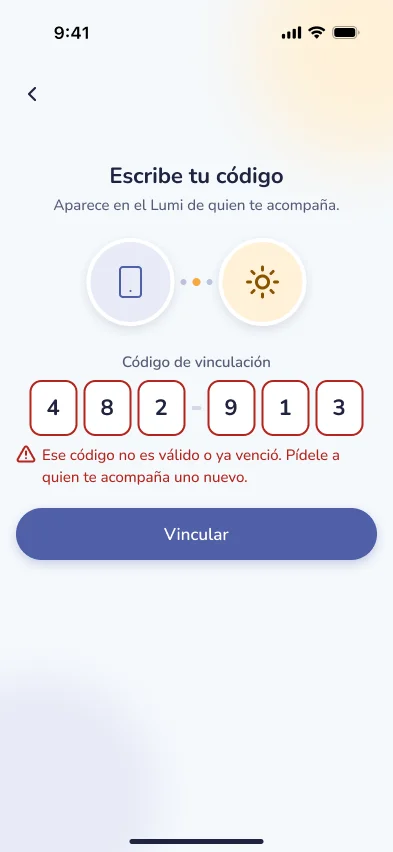

Lumi
A parental control app prototype designed to help parents review screen time, set daily app limits, and plan device-free hours. Lumi’s high-fidelity design brings screen-time information, app limits, and schedules into a shared family experience.

Role
UX Researcher & UI Designer
Project Goal
Design and evaluate a prototype that helps parents understand their children’s app usage and configure limits and schedules with clear feedback.
Target Audience
Parents with young children who want to manage screen use, including those with little or no experience using parental control apps.
Key Challenges & Constraints
The main challenge was making different types of restrictions understandable: distinguishing a daily limit (time duration) from a complete block (access prevention), and guiding schedule setup (start time, end time, and active days).
Evaluation Constraints: Usability evaluation focused on three core tasks evaluated in the low-fidelity prototype with three parents. The high-fidelity design was informed by those findings and reviewed for color contrast, button sizing, and heuristic usability principles. A follow-up user test on the high-fidelity prototype remains pending.
Design Strategy
Make screen time easier to find
Brought the daily screen-time summary into Home and provided a detailed usage view organized by app and category, clearly distinguishing profiles with usage data from unlinked devices.
Separate limits from blocking
Presented "Límite diario" and "Bloquear por completo" as separate choices with explicit short explanations and warning dialogs to direct parents to daily limits if they only want duration controls.
Explain schedules step by step
Divided rest schedule setup into two clear steps (selecting start time and selecting end time), explicitly stating when rest periods end the following morning.
Provide feedback after changes
Integrated confirmation states for saved limits, blocked apps, and saved schedules, offering an "Undo" option so parents can reverse intended changes easily.
Evaluation Conducted
We conducted moderated, in-person usability testing sessions with three parents using the low-fidelity prototype on a mobile device while thinking aloud to observe actions, questions, and difficulties. The low-fidelity prototype used in testing covered screen-time review, app restrictions, and schedule configuration.
Research Question: "How easy is it for parents to configure and monitor their children’s app usage?"
Task Scenario
Participants were asked to imagine that their child was spending too much time on TikTok and complete three goals:
- Find how much time the child had spent on TikTok that day.
- Set a daily limit of one hour for TikTok.
- Configure a general schedule that prevented phone use after 7 p.m.
Test Results & User Feedback
Quantitative results from the low-fidelity usability testing sessions with three parents:
Two participants completed all three tasks. The remaining participant blocked TikTok entirely instead of setting a one-hour daily limit. While task completion showed goals could be reached, help requests and errors highlighted critical friction points:
- Finding Screen-Time Information: Participants requested help locating the Screen Time section, prioritizing usage visibility on Home.
- Understanding Schedules: Participants confused start vs. end times and daily vs. weekly settings, generating wrong schedules.
- Distinguishing Limit vs. Block: One participant blocked TikTok entirely instead of applying a duration limit, proving the need for explicit choice explanations.
- Moving Between Screens: Difficulties returning to previous screens guided the implementation of consistent global navigation.
Final Design & Improvements
Guided by the low-fidelity study observations, I created the high-fidelity design in Figma to address each identified friction point:
1. Screen-time visibility and navigation
Home now includes a daily screen-time summary and access to a detailed usage view. The high-fidelity design uses shared navigation components to provide consistent routes.
- Related finding: Participants needed help locating screen-time information and moving between screens.
- Design intent: Make usage information easier to identify and reduce reliance on backtracking.
The revised design brings daily screen time into Home and provides access to usage details.


2. Clear app restriction choices
The restriction sheet presents “Límite diario” and “Bloquear por completo” as separate options, each with a one-line explanation. After a restriction is applied, a confirmation message such as “TikTok bloqueada” offers “Deshacer”.
- Related finding: One participant blocked TikTok instead of applying a one-hour limit.
- Design intent: Help parents understand and confirm the restriction they are choosing before committing.
The revised restriction flow separates a daily limit from a complete block and explains each option before confirmation.

3. Guided schedule configuration
The schedule flow separates start and end times into two steps ("Step 1 of 2", "Step 2 of 2"), explicitly signaling next-day morning endings.
- Related finding: Participants confused schedule times and daily or weekly settings.
- Design intent: Make the meaning of each time selection explicit.
Schedule configuration is divided into start and end steps, with an explicit indication when the rest period ends the following day.


4. Additional states and family flows
Included device linking error states, unlinked empty states, and child-facing screens that explain when app time runs out and offer an extra time request flow.
- Design scope note: These additions extend the high-fidelity design beyond the three tested tasks.
Additional high-fidelity states explain linking errors and allow children to request extra app time. These flows were not part of the initial usability test.


Key Learnings
The low-fidelity study showed that task completion alone did not explain the user experience. Most tasks were completed, but requests for help and unnecessary navigation steps revealed difficulties with restrictions and schedule configuration.
Core Learning: Those empirical observations directly guided the high-fidelity design: bringing screen time into Home, separating daily limits from complete blocking, and explaining schedules step by step. A follow-up study with users is needed to assess whether the revised flows help parents complete the same tasks with less assistance and fewer errors.